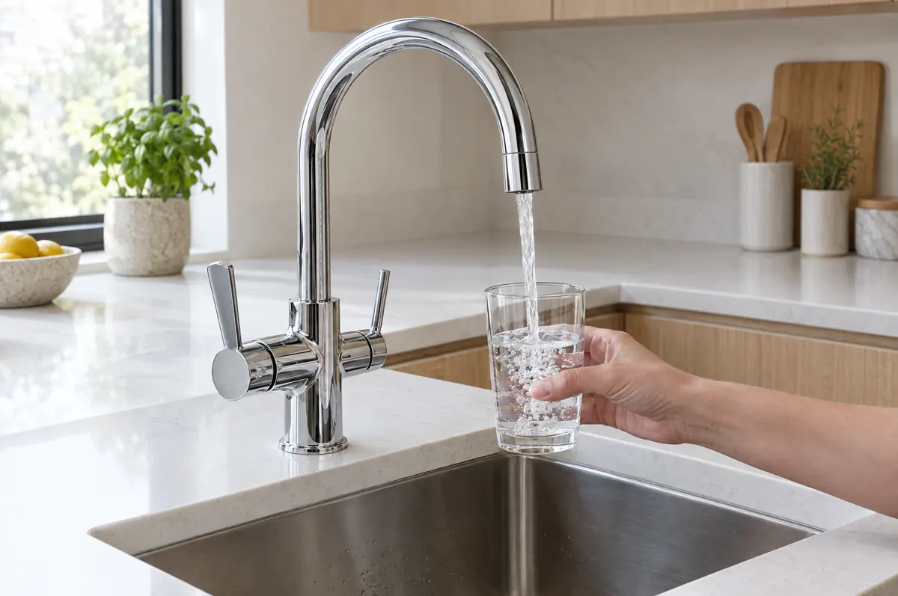
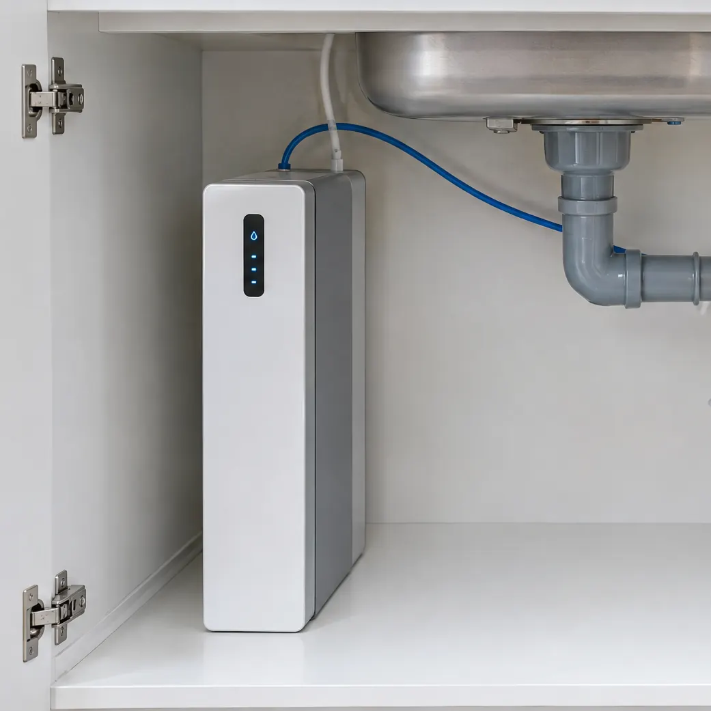
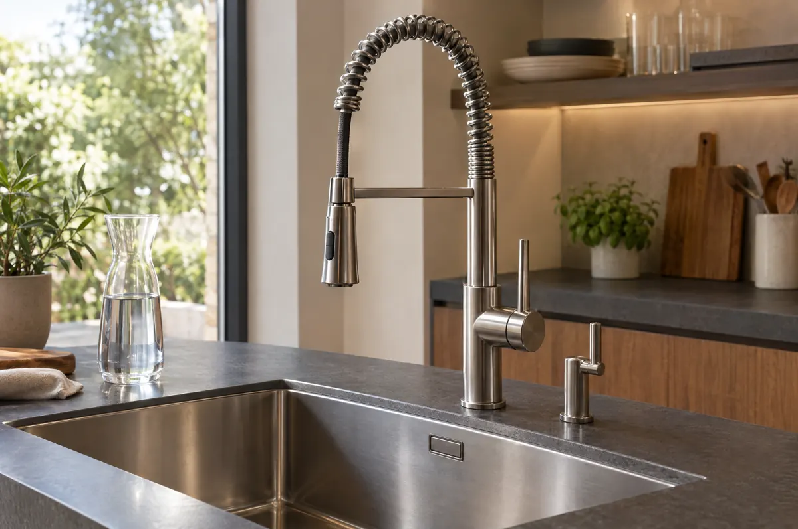

"Depuratore per il rubinetto": due cose diverse
Con la stessa ricerca si intendono due prodotti che hanno poco in comune:
- Il filtro da rubinetto: una piccola cartuccia che si avvita al beccuccio del rubinetto esistente. Si monta da soli in pochi minuti.
- Il depuratore sotto lavello: un impianto collegato all'acqua fredda di casa e nascosto nel mobile della cucina. Sul lavello si vede solo il rubinetto da cui esce l'acqua depurata.
La differenza non è solo di prezzo: cambia quello che resta nell'acqua che bevete.
Il filtro da avvitare al rubinetto: pro e limiti
I filtri da rubinetto sono quasi sempre a carbone attivo. Funzionano bene per quello per cui sono fatti: tolgono il sapore e l'odore di cloro e rendono l'acqua più gradevole. Costano poche decine di euro e non richiedono installazione.
I limiti però ci sono:
- Non trattengono i sali disciolti: calcare e nitrati passano. Contro PFAS e metalli pesanti l'efficacia dipende dal modello e cala man mano che la cartuccia si esaurisce.
- Cartucce piccole, da cambiare spesso: se si dimentica, il filtro smette di fare il suo lavoro senza che ce ne si accorga.
- Flusso ridotto e un ingombro sul beccuccio che non tutti i rubinetti accettano, per esempio quelli con doccetta estraibile.
Per capire cosa può contenere l'acqua del rubinetto e cosa serve davvero filtrare, trovate tutti i contaminanti spiegati nella guida ai contaminanti dell'acqua.
Il depuratore sotto lavello: sul piano resta solo il rubinetto
Un depuratore a osmosi inversa filtra l'acqua attraverso una membrana che trattiene nitrati, PFAS, metalli pesanti, microplastiche e cloro, e riduce anche il calcare. Si collega all'acqua fredda e allo scarico del lavello e sta tutto nel mobile della cucina.
I modelli di oggi occupano poco: quelli che installiamo hanno uno spessore da 6,7 cm (Osmoslim) a 10,5 cm (Osmosì e Osmosystem 150) e stanno in verticale contro la parete del mobile, lasciando spazio per il resto. Se il sottolavello è già pieno, il frigogasatore Frighost, alto solo 10,5 cm, si installa dietro lo zoccolo della cucina.

Quale rubinetto scegliere
Il depuratore sta sotto il lavello, ma l'acqua depurata deve uscire da qualche parte. Le soluzioni sono tre.
Rubinetto a 3 vie
Sostituisce il miscelatore che avete oggi. Dalla stessa bocca escono l'acqua di rete, calda e fredda, e l'acqua depurata, ognuna con la sua leva: le due acque non si mescolano mai. Sul lavello resta un solo rubinetto e non serve fare fori nuovi. Esiste anche nella versione con doccetta estraibile.
Rubinetto a 5 vie
È il rubinetto da abbinare a un frigogasatore: oltre all'acqua di rete calda e fredda eroga l'acqua depurata naturale, fredda e frizzante. Tutto da un unico rubinetto. Trovate i modelli e come funzionano nella pagina dell'erogatore per acqua fredda e frizzante.
Rubinetto dedicato
Un piccolo rubinetto in più, accanto al miscelatore, solo per l'acqua depurata. È la scelta giusta se il vostro rubinetto vi piace e volete tenerlo, o se avete un miscelatore con doccetta che non volete cambiare. Serve un piccolo foro in più sul lavello o sul piano.

Filtro sul rubinetto o depuratore sotto lavello: il confronto
| Filtro sul rubinetto | Depuratore sotto lavello (osmosi inversa) | |
|---|---|---|
| Cosa trattiene | Soprattutto cloro, odori e sapori | Nitrati, PFAS, metalli pesanti, microplastiche, cloro; riduce il calcare |
| Sul lavello | Cartuccia sul beccuccio | Solo il rubinetto (3 vie, 5 vie o dedicato) |
| Installazione | Fai da te, pochi minuti | Tecnico, meno di mezza giornata, senza opere murarie |
| Manutenzione | Cartucce da cambiare spesso | Filtri circa una volta l'anno, intorno ai 150 € |
| Acqua fredda e frizzante | No | Sì, con un frigogasatore e il rubinetto a 5 vie |
| Costo | Poche decine di euro più le cartucce | Da 2.200 € installato |
Come si installa
L'installazione di un depuratore sotto lavello richiede meno di mezza giornata e nessuna opera muraria. Il tecnico collega l'impianto all'acqua fredda e allo scarico del lavello, posiziona il depuratore nel mobile (o dietro lo zoccolo) e monta il rubinetto: il rubinetto a 3 o 5 vie usa lo stesso foro del miscelatore che sostituisce, quello dedicato ne richiede uno piccolo in più.
Se il depuratore viene installato insieme ai lavori di rifacimento dell'impianto idrico, la spesa può rientrare nella detrazione per le ristrutturazioni: trovate quando spetta e quando no nella guida alla detrazione.
Quanto costa
I nostri depuratori sotto lavello partono da 2.200 € installati. La manutenzione costa circa 150 € l'anno. Tutti i modelli sono nella pagina del depuratore acqua casa; per un confronto più ampio tra le soluzioni sul mercato c'è la guida ai prezzi dei depuratori per casa.
Domande frequenti
Si può mettere un depuratore direttamente sul rubinetto?
Sì, esistono filtri da avvitare al beccuccio del rubinetto, di solito a carbone attivo: migliorano il gusto e riducono cloro e odori, ma non trattengono i sali disciolti come calcare e nitrati. Per un'acqua depurata davvero si usa un impianto sotto il lavello, collegato a un rubinetto a 3 o 5 vie oppure a un piccolo rubinetto dedicato.
Meglio il rubinetto a 3 vie o il rubinetto dedicato?
Il rubinetto a 3 vie sostituisce il miscelatore attuale: dalla stessa bocca escono l'acqua di rete calda e fredda e l'acqua depurata, ciascuna con la sua leva, e sul lavello resta un solo rubinetto. Il rubinetto dedicato è un piccolo rubinetto in più accanto al miscelatore: è la scelta giusta se volete tenere il rubinetto che avete già.
Cos'è il rubinetto a 5 vie?
È il rubinetto che si usa con un frigogasatore: oltre all'acqua di rete calda e fredda eroga l'acqua depurata naturale, fredda e frizzante, tutto da un unico rubinetto sul lavello.
Serve forare il lavello o il piano della cucina?
Con il rubinetto a 3 o 5 vie no: prende il posto del miscelatore esistente e usa lo stesso foro. Con il rubinetto dedicato serve un piccolo foro in più sul lavello o sul piano. In entrambi i casi non ci sono opere murarie e l'installazione richiede meno di mezza giornata.
Quanto spazio serve sotto il lavello?
Poco: i depuratori a osmosi inversa che installiamo hanno uno spessore da 6,7 cm (Osmoslim) a 10,5 cm (Osmosì e Osmosystem 150) e stanno in verticale nel mobile sotto il lavello. Se il mobile è già pieno, il frigogasatore Frighost, alto 10,5 cm, si installa dietro lo zoccolo della cucina.